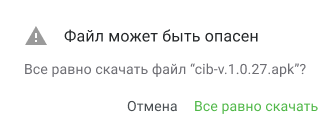
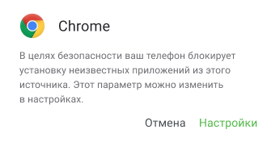
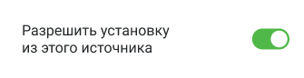

Когда требуется альтернативная установка?
- Приложение не доступно для установки из Play Market
- Не дается войти в приложение. которое было ранее установлено из Play Market
Если не удается войти в приложение, его нужно удалить и следовать инструкции.
Внимание! В данном случае потребуется повторно войти в приложение
с помощью логина и пароля.
С чего начать?
Для того чтобы скачать установочный файл, нажмите кнопку ниже.
Скачать для Android
Если вы увидите уведомление о том, что он может быть опасен, нажмите «Все равно скачать».

Внимание! Устанавливайте Мобильный банк только с официального сайта –
centrinvest.ru.
Установка из сторонних источников может повлечь за собой заражение вредоносным ПО и дальнейшую утечку ваших
персональных данных, в том числедоступ третьих лиц к Мобильному банку.
Установите Мобильный банк «Центр-инвест»
Нажмите на скачанный файл для установки приложения.
После этого может появиться уведомление о безопасности:

Для установки приложения необходимо в настройках разрешить установку
из внешнего источника (для Android версии ниже 8.0 нужно будет перейти в настройки устройства самостоятельно):

В следующем окне выберите «Установить»:
Войдите в Мобильный банк с помощью вашего логина и пароля